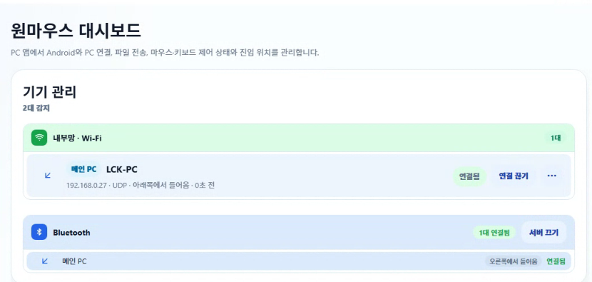
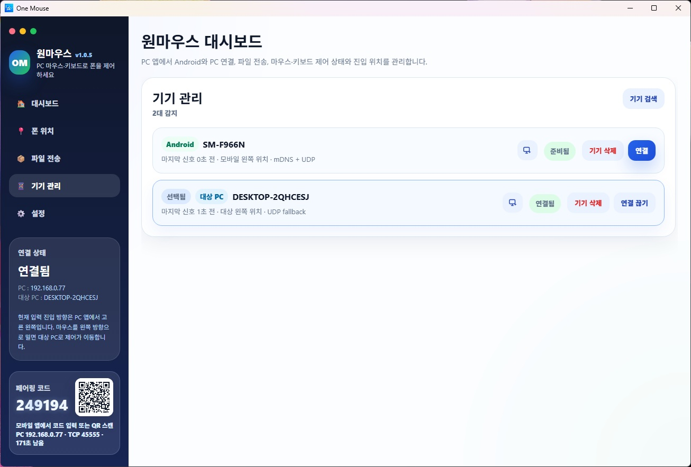
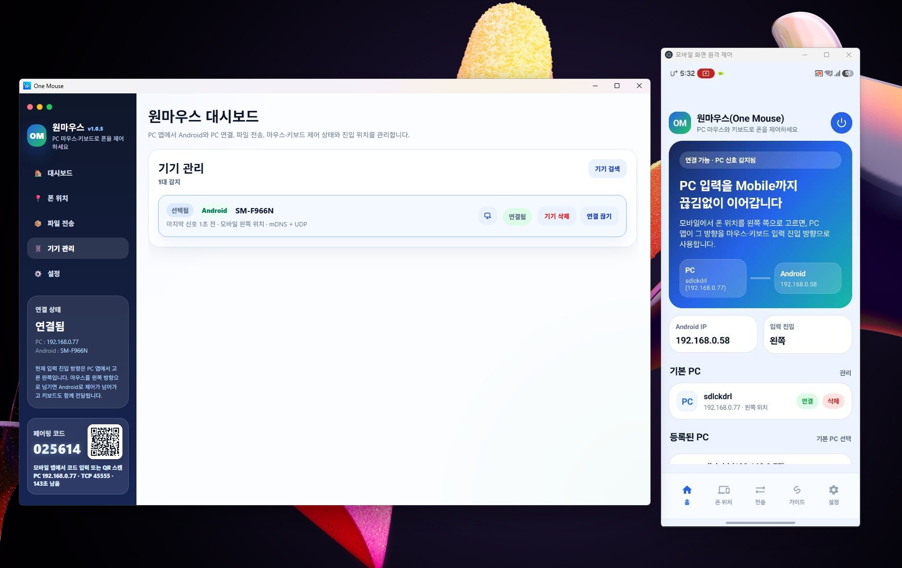
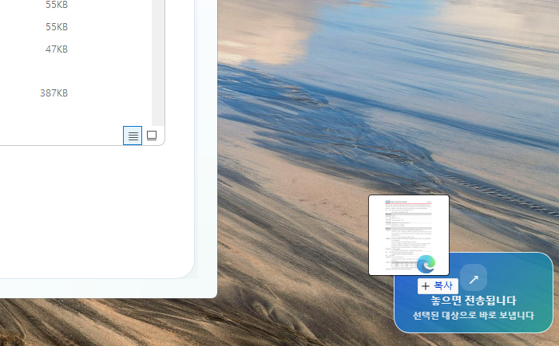
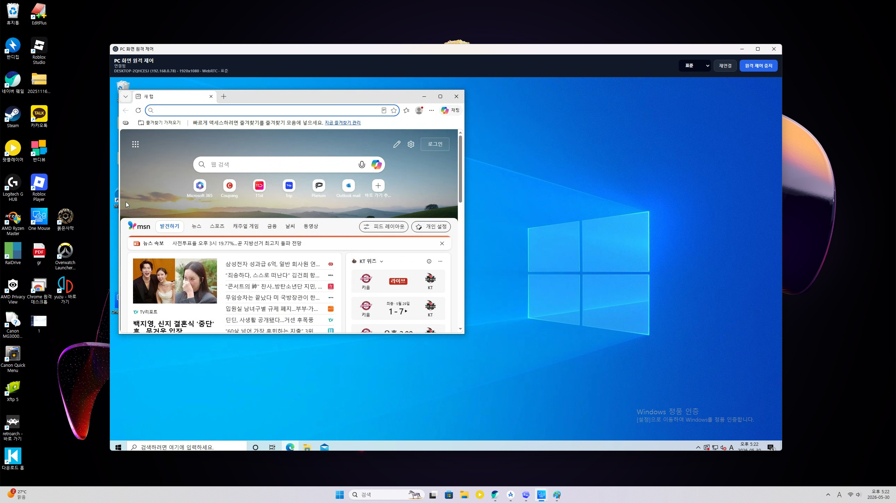
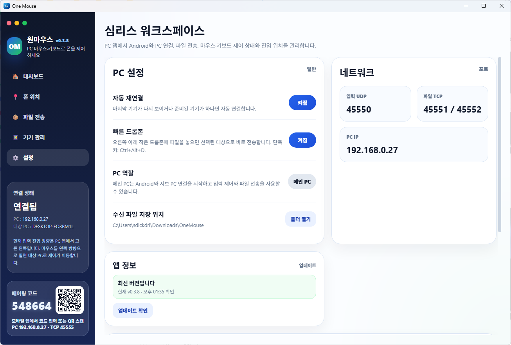
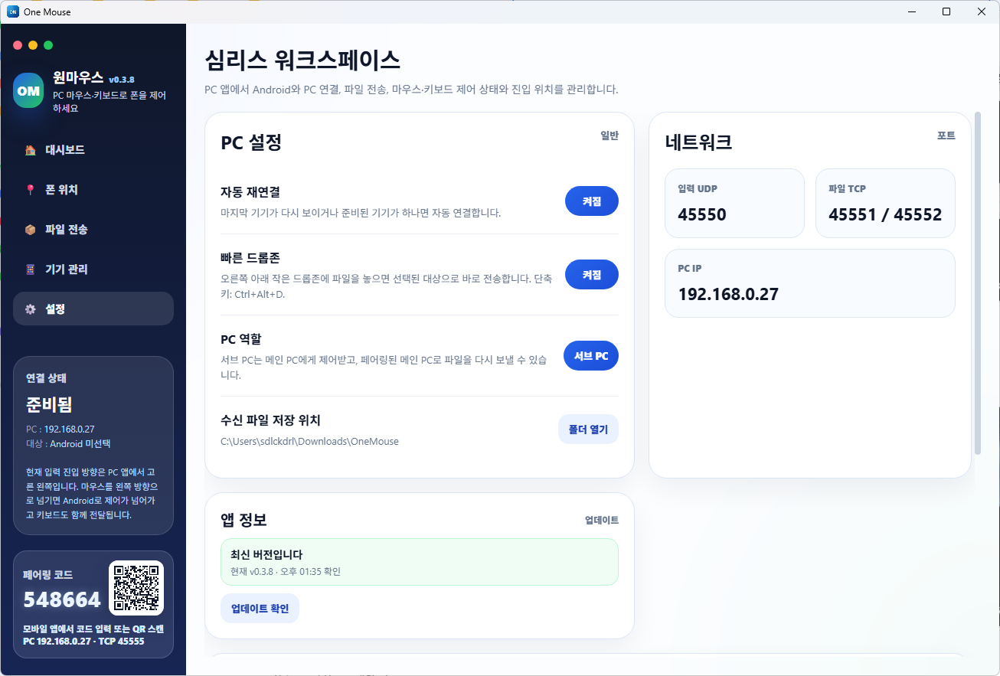
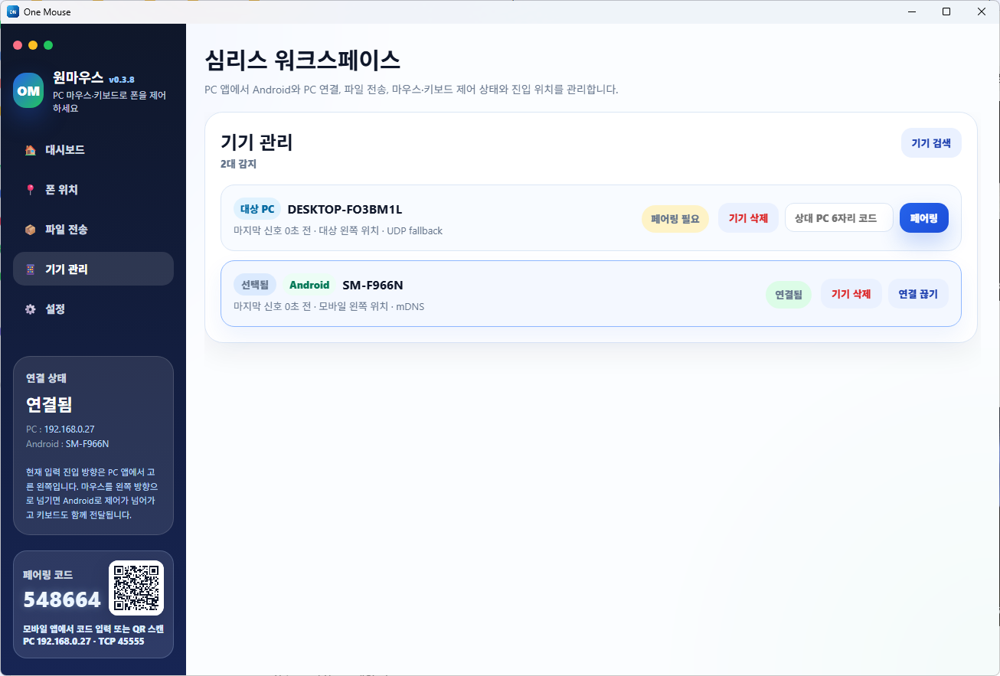
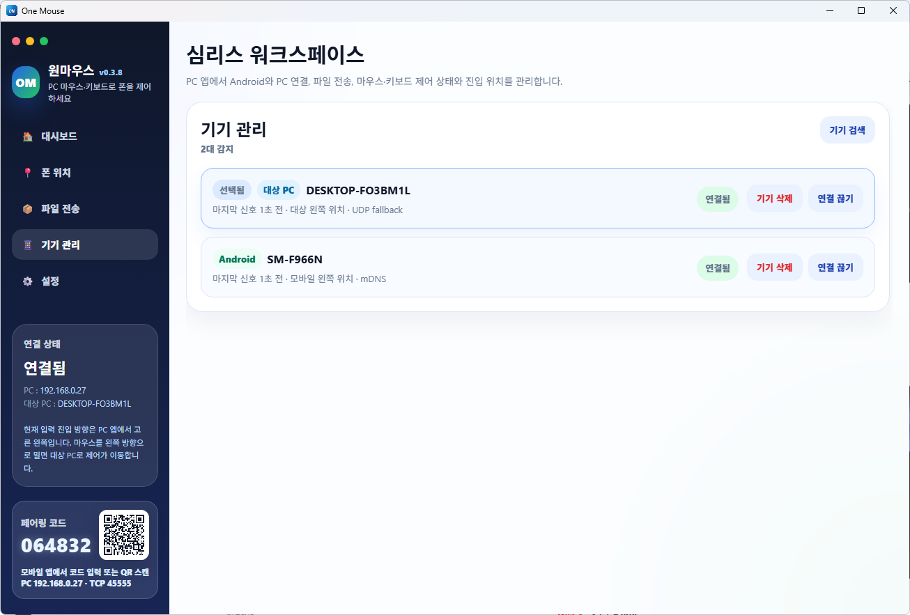
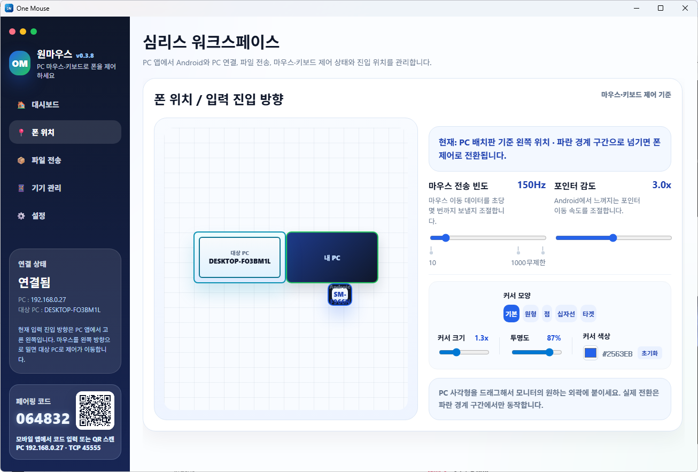

运行 PC 应用
在 Windows 上打开 OneMouse，PC 屏幕上会显示 6 位代码和二维码。最新的 Setup 安装文件可在下载页面自动连接。
Quick Start
无需自己摆弄复杂的网络设置。打开 PC 应用，在 Android 上找到 PC，再用二维码或 6 位代码确认即可。
在 Windows 上打开 OneMouse，PC 屏幕上会显示 6 位代码和二维码。最新的 Setup 安装文件可在下载页面自动连接。
要用 PC 的鼠标和键盘控制 Android，需要 OneMouse 无障碍服务。在首次设置中，实际上应视为必需的项目只有这一项。
当 PC 和 Android 处于同一 Wi-Fi 或同一路由器下时，应用就能找到 PC。在 Android 13 及以上，仅在这一刻可能会请求附近 Wi-Fi 设备权限。
扫描 PC 屏幕上的二维码或输入 6 位代码。完成这一步后，才能使用输入、文件和剪贴板通道。
把 Android 放在显示器左、右、上、下当中你实际要移过光标的位置。这个位置就成为光标的进入方向。
把鼠标朝编排方向推过去就会切换到 Android 或副 PC。PC 文件可以发送到 Quick Drop 区域，在 PC-to-PC 中也可以抓住文件越过屏幕边缘，在目标 PC 上放下。通过设备管理中的远程控制图标打开移动屏幕远程控制窗口，并用 Print Screen 或 Ctrl + Alt + S 把移动截图显示在 PC 默认查看器中。

Position
这是决定把鼠标移过哪个显示器边缘的步骤。把 Android 放在 PC 左、右、上、下当中你实际要使用的方向。

Bluetooth
即使没有相同的 Wi-Fi 或在断网环境下，也可以用蓝牙将 PC 与 Android，以及另一台 PC 直接连接， 使用鼠标和键盘输入、剪贴板以及文件传输。无需路由器或互联网连接。
When To Use
Order
在 Android 上开启蓝牙模式，并在 Windows 中配对一次，PC 应用便会自动连接。无需设置 COM 端口或串口，也无需在 PC 上单独点击连接按钮。
在 OneMouse 应用设置标签页中开启蓝牙模式后，Android 会等待 PC 的连接。
在 Windows 的蓝牙和设备设置中添加手机并配对一次即可。无需设置任何 COM 端口或串口。配对只需首次进行一次即可。
配对完成后，PC 应用会查找蓝牙设备并自动连接。它会在设备管理列表中显示为蓝牙设备。
与 Wi-Fi 连接相同，可以使用鼠标和键盘输入、双向剪贴板以及文件传输。

Notes
Remote Control
点击已配对 Android 行的远程控制图标，就会打开一个独立窗口，并在 PC 上显示 Android 屏幕。 首次开始时需要在 Android 上批准屏幕捕获权限，批准后即可在同一窗口中直接操作。
Controls


Permissions
并不是一开始就全部开启的结构。无障碍是输入控制的必要条件，其余项目只在需要的时刻请求或推荐。
File Transfer
在传输界面选择文件，或把文件放到 PC 屏幕上的小型 Quick Drop 区域，就会发送到选定的 Android 或副 PC。 在 PC-to-PC 中，可以抓住文件越过目标 PC 所在的屏幕边缘，再在目标 PC 上放下。 从 Android 发送到 PC 时，使用 Android 传输标签页或共享菜单。
Quick Drop
Quick Drop 的位置和启用状态会保存在 PC 应用中。当它妨碍操作时，可用全局快捷键隐藏或重新显示。

Quick Connect
PC 应用的设备管理列表中，前 9 个设备会显示 Ctrl + Alt + 1~9 快捷键。 无需重新找到应用窗口，就能立即连接常用的 Android 或副 PC。
Auto Reconnect
开启自动重连后，当上一个设备再次就绪，或者只有一个就绪设备时，PC 应用会重新尝试连接。 当鼠标在设备之间往来时不会另外弹出提示。
Advanced: PC to PC
要发起控制的 PC 在设置界面中把 PC 角色设为主 PC。要被控制的 PC 以副 PC 运行后， 在主 PC 的设备管理界面中搜索目标 PC，输入对方 PC 显示的 6 位代码完成配对。
Arrangement
PC Remote Control
Quality

PC-to-PC Screen Flow
主 PC 是发起连接的 PC，目标 PC 是接收鼠标和键盘的 PC。副 PC 的配对码就直接输入屏幕底部的 6 位数字。
发起控制的一方在设置界面中的 PC 角色必须是主 PC。主 PC 可以发起 Android 和目标 PC 连接。
在要被控制的 PC 上也运行 OneMouse，确认侧边栏底部的 6 位配对码。示例是类似 101884 这样的数字代码。
在主 PC 的设备管理界面中找到目标 PC 行，在对方 PC 6 位代码输入框中填入副 PC 代码后点击配对。
目标 PC 行变为已连接并附上已选定徽章时，就是当前的鼠标进入目标。当 Android 和目标 PC 同时显示时，会以选定的设备为准动作。
把目标 PC 方块拖到本机左、右、上、下当中实际所在的方向。Android 也可以一起放在同一个编排面板中。





Keyboard Shortcuts
快速连接和 Quick Drop 快捷键在 PC 上直接生效。Android 控制快捷键在鼠标已切换到 Android 的状态下生效。
| 快捷键 | 动作 | 备注 |
|---|---|---|
| Ctrl + Alt + 1~9 | 立即连接设备列表的前 9 个设备。 | 再按一次已连接设备的编号，就会断开该连接。 |
| Ctrl + Alt + D | 隐藏或重新显示 Quick Drop。 | 把文件放到 Quick Drop 区域，就会发送到选定的 Android 或副 PC。 |
| Enter | 在搜索框中执行搜索/完成。 | 优先发送 Android IME 的搜索/完成动作，而不是普通换行。 |
| Shift + Enter | 在输入框中插入换行。 | 用于在聊天或长句输入中分行。 |
| Ctrl + A | 全选当前输入框中的文本。 | 当应用不直接暴露选择范围时，OneMouse 会辅助保持选择状态。 |
| Ctrl + C / X / V | 执行复制、剪切、粘贴。 | 复制和剪切会尽可能同时直接同步到 PC 剪贴板。 |
| Shift + 方向键 | 扩展文本选择范围。 | 部分应用可能会限制 Android 无障碍的选择动作。 |
| Alt + ↑ / ↓ | 调节 Android 媒体音量。 | 即使输入框有焦点也优先执行，按住不放则会重复调节。 |
| Alt + Shift + ↑ / ↓ | 调节 Android 屏幕亮度。 | 首次使用时需要允许 Android 的修改系统设置权限。 |
| Print Screen | 捕获 Android 屏幕并用 PC 默认图像查看器打开。 | 在 Android 11 及以上使用无障碍截图功能。安全屏幕可能无法捕获。 |
| Ctrl + Alt + S | 代替 Print Screen 执行移动截图。 | 在笔记本或远程键盘上难以使用 Print Screen 键时使用。 |
| Alt + Tab | 打开 Android 最近应用界面并切换应用。 | 按住 Alt 反复按 Tab 移动到下一个应用，松开 Alt 即选定。 |
| Ctrl + Alt + Backspace | 把输入控制强制返回到 PC。 | 当光标还停留在 Android 一侧时，恢复为 PC 输入，并在 PC 上显示鼠标返回提示。 |
Daily Use
Screenshot
捕获 Android 屏幕后会传输到 PC，并用 Windows 默认图像查看器打开。 在设有安全策略的屏幕，或 Android 无障碍截图不被允许的状态下可能会失败。 需要持续查看并操作时使用移动屏幕远程控制，只确认一张时使用截图快捷键。
When It Fails
Text to PC
在三星键盘和部分应用中，OneMouse to PC 位于更多菜单内。首次可能需要在应用管理中开启 One Mouse。